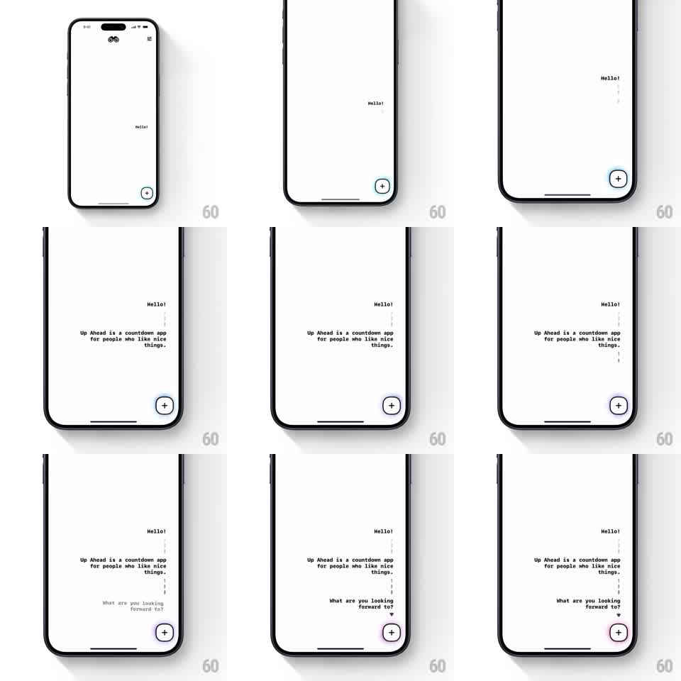

Media
Frame-by-frame

Rebuild this animation 1:1: Up Ahead's typographic onboarding - "Hello!" pops in first, then "Up Ahead is a countdown app for people who like nice things." reveals with a staggered word-by-word typewriter, then "What are you looking forward to?" fades in while the + button pulses.

Rebuild this animation 1:1: Up Ahead's typographic onboarding - "Hello!" pops in first, then "Up Ahead is a countdown app for people who like nice things." reveals with a staggered word-by-word typewriter, then "What are you looking forward to?" fades in while the + button pulses. ## Integration Integration: stack-agnostic spec - springs given as stiffness/damping, timed motions as duration + curve; map every value to your framework and animation library of choice. ## Scene Near-empty white screen: tiny logo top-left, menu icon top-right, a circled + button bottom-right, and a dotted vertical guide line down the right side. All typography is small, lowercase-ish, and precisely placed. ## Motion spec Pattern: staggered typographic reveal + pulsing CTA. - "Hello!" pops in at its position (scale 0.8 -> 1 with a soft spring ~350/22, ~250ms). - ~400ms later the sentence "Up Ahead is a countdown app for people who like nice things." types in word-by-word (~90ms per word), each word fading + rising 4px. - Then "What are you looking forward to?" fades in lower down (~300ms), trailing a small chevron. - The + button pulses gently the whole time (scale 1 -> 1.06, 1.4s loop) with a soft ring glow. - The dotted guide line draws downward slowly during the sequence. ## Calibration - Reveal order is fixed: greeting, sentence, question - each waits for the previous to finish. - Words rise only a few px; this is a quiet sequence, not bouncy. ## Reduced motion All text fades in as blocks in the same order. ## Don't miss - Nothing is centered: the composition is deliberately off-grid, text hugging the left with the guide line on the right. - The + button is the only element with a loop.